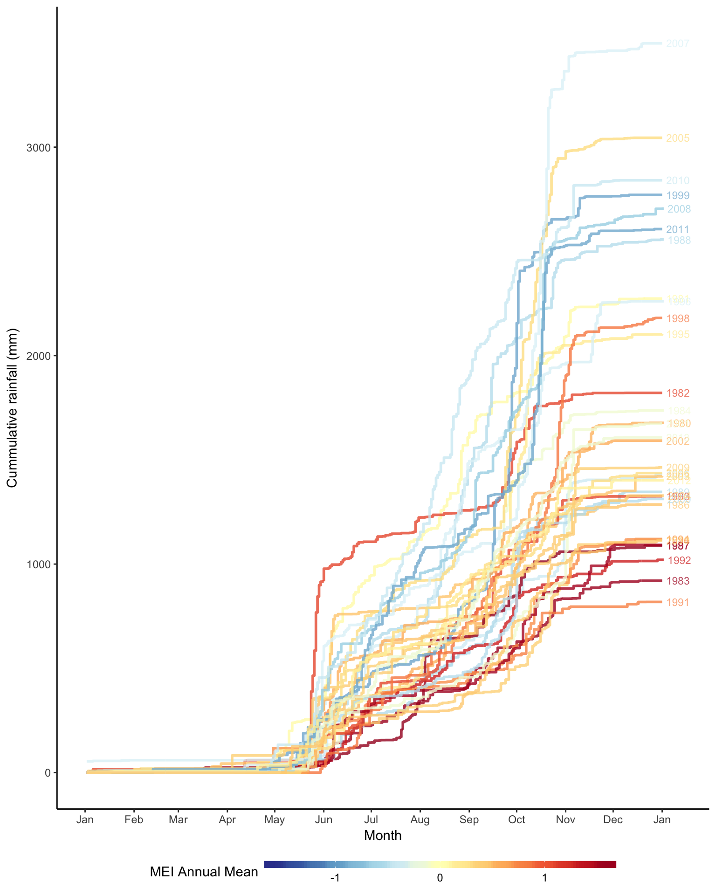

Sys.setenv(TZ = 'UTC')
list.of.packages <- c("plyr", "ggplot2", "lubridate", "RColorBrewer",
"scales", "colorspace", "stringr", "gridExtra",
"zoo", "RcppRoll", "xtable", "dplyr", "tidyr",
"reshape2")
new.packages <- list.of.packages[!(list.of.packages %in% installed.packages()[,"Package"])]
if(length(new.packages)) install.packages(unlist(new.packages))
lapply(list.of.packages, require, character.only = T)## [[1]]
## [1] TRUE
##
## [[2]]
## [1] TRUE
##
## [[3]]
## [1] TRUE
##
## [[4]]
## [1] TRUE
##
## [[5]]
## [1] TRUE
##
## [[6]]
## [1] TRUE
##
## [[7]]
## [1] TRUE
##
## [[8]]
## [1] TRUE
##
## [[9]]
## [1] TRUE
##
## [[10]]
## [1] TRUE
##
## [[11]]
## [1] TRUE
##
## [[12]]
## [1] TRUE
##
## [[13]]
## [1] TRUE
##
## [[14]]
## [1] TRUEload("~/Dropbox/R/SSRChange_Climate/.RData")census <- read.csv("CensusSummary.csv")
census$DateOf <- as.POSIXct(census$DateOf)
census$GroupNumber <- factor(census$GroupNumber)
names(census)[29] <- "Infant"
census$c_male <- rowSums(census[, c(21, 23)], na.rm = TRUE)
census$c_female <- census$Fem
census$c_juvenile <- rowSums(census[, c(24:26)], na.rm = TRUE)
census$c_infant <- rowSums(census[, c(27:30)], na.rm = TRUE)
census$c_simm <- rowSums(census[, c(27:30, 25)], na.rm = TRUE)
census$c_unk <- census$Unk
census[is.na(census$c_female),]$c_female <- 0
census[is.na(census$c_unk),]$c_unk <- 0
census$c_total <- census$Total
census[is.na(census$Total),]$c_total <- 0
heat_grad <- heat_hcl(12, c = c(80, 30), l = c(30, 90), power = c(1/5, 2))The first set of results here are basically a continuation of previous census results. This mostly rehashes the results from your 2012 book chapter, with a few notable changes: - I have added the two final years (2011 and 2013) - I have included all the recent minor changes made to the 2003 and 2007 censuses - I have recalculated summary stats for past years using the same rules as recent years.
As I mentioned in an email to you a while back, I wasn’t able to perfectly reproduce the numbers from the book chaper, but they are fairly close. I don’t know if it’s worth explaining in the manuscript, but it’s probably just due to slight differenes in how the “replacement” counts were handeled. Regardless, it seems that small discrepancies are not unusual, because the numbers also differ slightly between the 2001 and 2012 census papers.
First is a plot of total estimated population size. This plot is also broken up by age/sex class. The “Unknown” category shows the supplemental animals added to the estimate to correct for sampling effort (i.e., the replacements for very poor counts or not-found groups).
c_total <- census %>%
filter(c_total > 0 & GroupLetter != "" & Year != 1993 &
UseForTotalEstimate == "Yes") %>%
group_by(Year) %>%
summarise(Males = sum(c_male),
Females = sum(c_female),
Juveniles = sum(c_juvenile),
Infants = sum(c_infant),
Unknown = sum(c_unk),
Total = sum(c_total)) %>%
gather(variable, count, -Year) %>%
filter(variable != "Total") %>%
group_by(Year) %>%
summarise(n_total = sum(count, na.rm = TRUE))
smooth_all <- c_totalc_demog <- census %>%
filter(c_total > 0 & GroupLetter != "" & Year != 1993 &
UseForDemography == "Yes") %>%
group_by(Year)
c_groups <- c_demog %>%
summarise(n_total = sum(c_male, c_female, c_juvenile,
c_infant, c_unk, na.rm = TRUE),
n_group = length(Year),
mean_g = mean(c_total, na.rm = TRUE),
med_g = median(c_total, na.rm = TRUE))
c_ifr <- c_demog %>%
summarise(Males = sum(c_male),
Females = sum(c_female),
Juveniles = sum(c_juvenile),
SImm = sum(c_simm),
Infants = sum(c_infant),
Unknown = sum(c_unk),
mf_ratio = Males / Females,
if_ratio = SImm / Females,
jf_ratio = Juveniles / Females,
immf_ratio = (Infants + Juveniles) / Females) %>%
select(Year, 8:11)
smooth_all <- cbind(smooth_all, c_groups[, "mean_g"],
c_ifr[, "if_ratio"])
names(smooth_all)[3:4] <- c("mean_g", "if_ratio")
For interest’s sake, here is a stacked area percentage plot of group compositions over time. The data here only include high quality counts, as poor / fair counts are unreliable for determining group compositions. This will probably be left out of the paper.
c_ngroups <- census %>%
filter(c_total > 0 & Year != 1993 & UseForTotalEstimate == "Yes") %>%
group_by(Year, CensusGroupName) %>%
summarise(n_animals = sum(c_total)) %>%
ungroup() %>%
group_by(Year) %>%
summarise(g_mean = round(mean(n_animals, na.rm = TRUE), 1),
n_groups = length(Year))
smooth_all <- cbind(smooth_all, c_ngroups[, "n_groups"])
names(smooth_all)[5] <- "num_groups"
Finally, this plot shows how three major population parameters changed over time. Loess smoothers are added to aid visual interpretation of the trend.
I used a set of 11 satellite images spanning 1985 to 2011 to quantify changes in the degree of forest evergreenness in SSR. I’ll spare you the details in this summary; suffice to say now that it’s similar to what I wrote in the home range paper, only with 11 images rather than one. All the images were acquired within two weeks of March 20.
Despite my best efforts to normalize the images to one another, quite a lot of unexpected variablity remains. For example, as you can see in the plots below, things are greening-up nicely until 1992-1993, when it suddenly bottoms out. It happens again in 1998. I believe that this is due to the variable timing of leaf shedding, which is probably affected by the strength of the preceeding late wet season. As I discuss below, these extreme years may be linked to the ENSO phenomenon. Despite the ups and downs, there does appear to be a clear “greening” trend as younger forest classes are replaced by more mature ones. Here is a plot of land cover; the categories refer to the degree of evergreenness.
As I mentioned above, there are some really unusual years that deviate from the overall greening trend, specifically the images for 1992, 1993, and 1998. These appear to have been exceptionally dry periods in SSR. Here is are two plots that show rainfall patterns in the park, and how they might relate to ENSO phases.
The top plot shows total yearly rainfall at the site. The dashed line is the annual median and the dotted line is the annual mean. The bottom plot shows a monthly time series of Southern Oscillation Index values during the same period. Sustained negative values below -8 indicate El Niño episodes, while sustained positive values above +8 indicate La Niña episodes. The former are associated with dry conditions in SSR, while the latter are associated with wet conditions. The squiggly line is a 5-month weighted mean smoother of monthly SOI values over the entire period.
# Use PACE DB for most recent data from SSR
# Pull latest weather
# Probably a good idea to check data to make sure it's still valid
# ssr <- collect(tbl(pace_db, "tblWeather"))
# ssr <- select(ssr, DateOf, Rainfall)
# names(ssr) <- c("date_of", "rainfall")
# ssr <- ssr %>%
# filter(!is.na(rainfall)) %>%
# mutate(type = "daily",
# year_of = year(date_of),
# site = "ssr") %>%
# arrange(date_of) %>%
# select(year_of, rainfall, date_of, type, site)
#
# write.csv(ssr, file = "ssr_rain.csv", row.names = FALSE)
daily_rain <- read.csv("ssr_rain.csv")
daily_rain$date_of <- as.POSIXct(daily_rain$date_of)
yearly_rain <- daily_rain %>%
filter(year_of < 2015) %>%
group_by(year_of) %>%
summarise(total_rain = sum(rainfall))
y_rain_median <- median(yearly_rain$total_rain)
y_rain_mean <- mean(yearly_rain$total_rain)
yearly_rain <- mutate(yearly_rain,
date_of = as.POSIXct(paste(year_of, "07-01", sep = "-")))
y_rain_plot <- ggplot(yearly_rain,
aes(x = date_of, y = total_rain, fill = total_rain,
group = year_of)) +
geom_bar(stat = "identity", color = "black") +
scale_fill_gradient2(name = "Total Rain (mm)",
midpoint = y_rain_median,
low = "#8C510A", high = "#01665E", mid = "#F5F5F5",
limits = c(min(yearly_rain$total_rain),
max(yearly_rain$total_rain)),
guide = FALSE) +
labs(x = "Year", y = "Total rainfall (mm)") +
theme_bw() +
geom_hline(aes(yintercept = y_rain_median),
lty = 2, color = "gray30") +
geom_hline(aes(yintercept = y_rain_mean),
lty = 3, color = "gray30") +
theme(legend.position = "bottom",
axis.text.y = element_blank(),
panel.grid.major.x= element_blank()) +
scale_x_datetime(date_labels = "%Y",
limits = c(ymd("1978-05-01", tz = "UTC"),
ymd("2014-05-01", tz = "UTC")),
date_minor_breaks = "1 year")As you can see, 1991 and 1992 are two of the lowest rainfall years on record, and not only that, but they’re consecutive. It must have been a brutal time for the trees and monkeys. This was during an unusually prolonged El Niño period. In fact, you can see that the driest years correspond pretty well with strong El Niño episodes, like in 1983, 1991-1994, and 1997. Here’s another plot that shows when exactly the rain fell in 91 and 92 years compared to normal years.
dd <- daily_rain %>%
filter(year_of != 1979) %>%
group_by(year_of) %>%
mutate(cs = cumsum(rainfall))
mm <- dd %>%
filter(month(date_of) == 12 & day(date_of) == 31) %>%
select(date_of, cs)
names(mm)[3] <- "year_total"
r_cum <- left_join(dd, select(mm, year_of, year_total))
r_cum <- left_join(r_cum, select(mei_yearly, year_of, mei_mean))
r_cum$date_of <- ymd(r_cum$date_of, tz = "UTC")
r_cum$month_of <- month(r_cum$date_of)
temp <- mei %>%
mutate(month_of = month(date_of)) %>%
select(mei, year_of, month_of, mei)
r_cum <- left_join(r_cum, temp, by = c("year_of", "month_of"))
mm <- inner_join(mm, select(r_cum, date_of, mei_mean))
ggplot() +
geom_step(data = r_cum,
aes(x = as.Date(yday(date_of)),
y = cs, group = year_of, color = mei_mean),
size = 1, alpha = 0.8) +
geom_text(data = mm, aes(x = as.Date(yday(date_of)) + days(10),
y = year_total, color = mei_mean,
group = year_of, label = year_of),
size = 3, alpha = 0.7) +
scale_x_date(breaks = date_breaks("months"), labels = date_format("%b")) +
scale_color_gradientn(name = "MEI Annual Mean",
colours = rev(brewer.pal(11, "RdYlBu")),
limits = c(-1.65, 1.65)) +
theme_classic() +
theme(legend.position = "bottom",
legend.key.width=unit(2, "cm"),
legend.key.height=unit(0.2, "cm")) +
labs(x = "Month", y = "Cummulative rainfall (mm)")
r_2014 <- dd %>%
filter(year_of == 2014) %>%
select(date_of, cs)
r_2014_t <- data.frame(year_of = 2014,
date_of = max(as.Date(r_2014$date_of)),
year_total = max(r_2014$cs))
ggplot() +
geom_step(data = r_cum,
aes(x = as.Date(yday(date_of)),
y = cs, group = year_of),
size = 1, alpha = 0.8, color = "gray50") +
geom_text(data = mm, aes(x = as.Date(yday(date_of)) + days(10),
y = year_total,
group = year_of, label = year_of),
size = 3, alpha = 0.7, color = "gray50") +
geom_step(data = r_2014,
aes(x = as.Date(yday(date_of)),
y = cs),
size = 1, color = "red") +
geom_text(data = r_2014_t, aes(x = as.Date(yday(date_of)) + days(10),
y = year_total,
label = year_of),
size = 3, color = "red") +
scale_x_date(breaks = date_breaks("months"), labels = date_format("%b")) +
# scale_color_gradientn(name = "MEI Annual Mean",
# colours = rev(brewer.pal(11, "RdYlBu")),
# limits = c(-1.65, 1.65)) +
theme_classic() +
# theme(legend.position = "bottom",
# legend.key.width=unit(2, "cm"),
# legend.key.height=unit(0.2, "cm")) +
labs(x = "Month", y = "Cummulative rainfall (mm)")My point is that these two wet seasons were exceptionally bad, and so it follows leaf-shedding phenology was probably affected as the trees suffered during this time. This probably explains the much less green images for the years following these weak wet seasons: 1992, 1993, and 1998.
Here’s another plot showing the relationship between the Southern Oscillation Index and the rainfall trend. The thin blue line is a seasonally decomposed trend of monthly rainfall totals over the entire study period, i.e., it’s the remaining pattern in rainfall values after accounting for the very strong season pattern. The thick blue line is a LOESS smoother of this trend. The thin orange line is the 5-month moving weighted average of the SOI values, as plotted above, while the thick orange line is another LOESS smoother. As you can see, the patterns match up pretty well. Since the values differed in magnitude quite a lot, I applied a z-transofmation for this plot to improve visual interpretation. The cross-correlation between the two time series 0.605, and the lag which results in maximum correlation is 1.67 months (i.e., SOI leads rainfall, and above-average SOI is likely to lead to above-average rainfall about 1.67 months later).
temp <- zoo(w_month$rain_sum, w_month$date_of, frequency = 12)
rain_ts <- ts(coredata(temp), freq = frequency(temp),
start = c(year(start(temp)), month(start(temp))),
end = c(year(end(temp)), month(end(temp))))
stl_dates <- floor_date(ymd(rownames(data.frame(temp)), tz = "UTC"),
unit = "month") + days(14)
rain_stl <- data.frame(stl_dates)
for(i in 4:37){
temp <- stl(rain_ts, s.window = "periodic",
t.window = i, t.degree = 0)
rain_stl <- cbind(rain_stl, data.frame(temp$time.series)$trend)
names(rain_stl)[i - 2] <- paste(i, "months", sep = "_")
}
rain_stl <- gather(rain_stl, window, value, -stl_dates)
rain_stl <- mutate(rain_stl, n_months = as.numeric(as.character(str_extract(rain_stl$window, pattern = "[0-9]+"))))
ggplot(rain_stl, aes(x = stl_dates, y = value,
color = n_months, group = window)) +
geom_line() +
scale_color_gradientn(colours = rev(heat_grad),
name = "Sliding window \nlength (months)") +
theme_classic() +
geom_line(data = filter(rain_stl, n_months == 18),
aes(x = stl_dates, y = value, group = window),
color = "#00AAFF", size = 0.8) +
scale_x_datetime(breaks = date_breaks(width = "2 years"),
labels = date_format("%Y")) +
theme(axis.text.x = element_text(angle = 90, vjust = 0.5)) +
labs(x = "Date", y = "Rainfall trend")To analyze land cover change, I calculated a variety of metrics that quantify different aspects of landscape spatial pattern. There are literally hundreds of metrics out there that people use, and many of them are redundant. I followed some recently published guidelines for selecting a core set of “consistent and universal” metrics. Here are some descriptions, taken verbatim from the paper:
The plots below show trends in these metrics (plus proportion of landscape) from 1985 to 2011 for each habitat class (i.e., “Class level” metrics in table above).
I also looked at a variety of metrics for the landscape as a whole (i.e., “Landscape level” metrics). These are obtained by summing or averaging over all class types, and describe changes in the landscape as a whole.
Finally, I carried out a “sub-regional” analysis to see if and how the patterns of monkey population and landscape change differed spatially among regions of the park.
I created sub-regions of interest based on the GPS locations of all capuchin groups found during the 2003, 2007, 2011, and 2013 censuses. Linda: I changed the method for how the regions were defined because the old ones looked weird and lumpy. Here’s the new descripion: I created networks of proximate groups by linking each pair of points separated by less than 1 km with a straight line segment. I then buffered these line segments by 500 m on both sides and dissolved the boundaries among overlapping buffers. After removing small lacunae and bridging trivial gaps, each disjoint set of merged buffers was defined as a sub-region of interest (Figure X). All sub-regions are therefore separated by areas that are evidently used very infrequently, if at all, by capuchin groups. Here’s what the regions look like:
[RegionsMap][RegionsMap.png]
After assigning each known group to one of these sub-regions, I carried out some of the same analyses as described above for each sub-region. However, rather than calculating the full suite of population summary stats and landscape metrics, I focused on total sub-population size and proportion of landscape for each habitat class in each sub-region.
Here’s a plot of population size over time in each subregion.
As you can see, there are two primary foci of capuchin density in the park: - the Plateau area, which includes the admin area, the La Penca stuff, and the valleys that drain off to the east (Duende, Puercos, Guapote, etc.) - the Naranjo primary forest + a few large tributaries that are continuous with this forest.
Perhaps more interestingly, it is only in the Plateau sub-region that we see population continuing to increase steadily. In all other sub-regions, population growth appears to have leveled off decades ago. Why might that be?
We can remove Nancite and Santa Elena because they only consist of a single group, or at most two groups. Here is a plot of capuchin population density in each region, using the total area of the region (ignoring habitat types). It’s interesting that all the densities appear to be converging at around 12 animals / km^2, and again, it’s only the Plateau that seems to be still increasing (albeit slowly).
Here’s a plot forest cover change in each sub-region:
I think perhaps the thing that stands out most here (with respect to the Plateau sub-region) is the relatively large gain in moderately evergreen forest compared to the other sub-regions. There were also large gains in highly evergreen forest, but the same can be said for various other regions of the park. The drop in totally deciduous land cover also seems to be the most precipitous and absolute in the plateau region such that there is practically zero completely open shrubland in the present day.
Some wild speculation: I suggest that the continued population growth in the Plateau region might be due to greater gains in moderately deciduous intermediate-stage forest compared to other areas of the park. Soil type could be an important factor, as the Plateau region is relatively flat and probably has greater soil depth than the other regions.